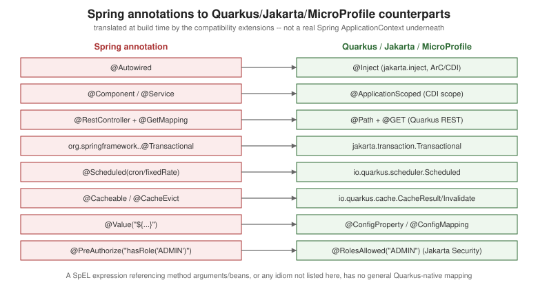
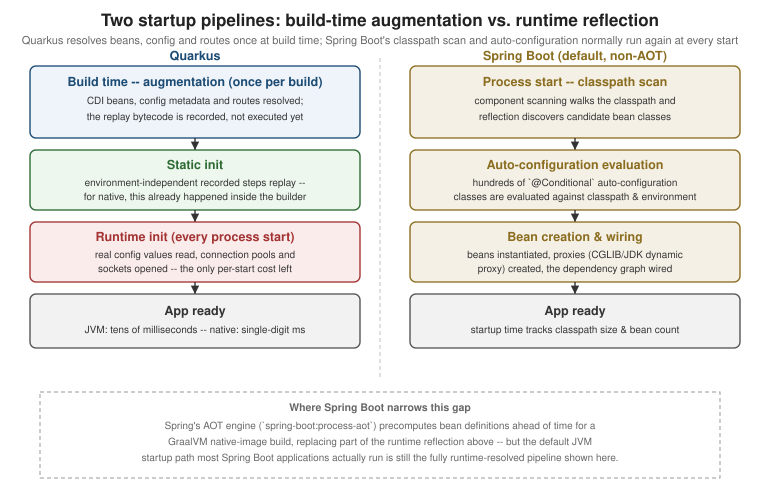

Quarkus vs. Spring Boot
|
This content was generated with the assistance of AI and should be verified against the official documentation before being relied on in production. |
Quarkus and Spring Boot solve the same problem — building and running a
production Java backend service — from two different starting assumptions about when the framework is allowed
to do its work. Spring Boot optimises for the broadest possible ecosystem and a stable, well-documented runtime
programming model: components are discovered, configured and wired together while the application is running,
which is what makes Spring’s vast library ecosystem, its dynamic proxying, and its runtime-conditional
auto-configuration all work the way they do. Quarkus optimises for startup time, memory footprint and container
density by moving as much of that work as possible to build time, ahead of running anything, at the cost of a
closed-world assumption: the set of beans, endpoints, and reflection targets an application will ever use must
be knowable before the JVM (or native-image) ever starts. Neither optimization target is wrong; they are
different bets about where the cost of building a service should be paid — once, at build time, or repeatedly,
at every process start.
Concept and annotation mapping
The table below maps the Spring Boot idiom most Java developers already know to its closest Quarkus/Jakarta/ MicroProfile equivalent. Treat "equivalent" loosely — several rows below are also covered, from the Quarkus side, on Spring API Compatibility Extensions, which documents exactly how far the mechanical translation goes and where it stops.
| Spring Boot | Quarkus | Notes |
|---|---|---|
|
no equivalent — nothing to bootstrap |
Spring Boot’s single annotation both marks the application class and triggers component scanning and
auto-configuration at startup. Quarkus has no comparable bootstrap annotation because there is no runtime
scanning step to trigger: the equivalent work (discovering beans, resolving config, wiring routes) already ran
during build-time augmentation, so the generated |
|
|
Mechanical in the common case, but CDI has no single "just a bean" stereotype the way Spring’s component
scanning does — picking a scope ( |
|
|
Direct rename in the field/constructor-injection case; see CDI and the Programming Model (ArC). |
|
|
|
|
|
Mechanical for a plain CRUD-style resource; a controller relying on Spring MVC’s |
|
|
Both declare a typed HTTP client from an interface. |
Spring Data repositories |
Panache / Quarkus Data |
|
|
|
Same annotation name, different package and a different transaction manager underneath (Narayana JTA rather
than Spring’s |
|
|
Same shape, different annotation names and package. See The Quarkus Cache Extension and Caching: the Spring Cache Abstraction, Caffeine, and Redis. |
|
|
The annotation name is identical but the attributes are not: Spring’s |
Reactor |
Mutiny |
Both model, respectively, a single deferred value and a stream of values, but the operator vocabulary and subscription semantics differ enough that porting code is a rewrite, not a search-and-replace. See Reactive Programming and Mutiny and Reactive Programming with Project Reactor. |
Actuator |
|
Spring Boot Actuator bundles operational endpoints under one dependency and one path prefix. Quarkus splits
the same concerns across extensions surfaced under |
Testcontainers wired by hand |
Dev Services |
Both give a real containerized dependency for local/test runs. Testcontainers under Spring Boot is typically a
|
|
|
Both boot the full application context/container in the test JVM. See Testing Quarkus Applications and Unit and Integration Testing. |
Spring profiles |
Quarkus profiles |
Conceptually identical — a named configuration variant selected at startup ( |
Spring Cloud |
the Quarkus/SmallRye equivalents |
There is no single Quarkus package matching Spring Cloud’s breadth. Individual concerns map to individual
extensions instead: Fault Tolerance and Resilience
(SmallRye Fault Tolerance) for what Spring Cloud Circuit Breaker/Resilience4j cover (see
Resilience4j with Spring Boot), Stork
(covered alongside the REST Client) for client-side service discovery,
and Kubernetes and OpenShift plus
the |

Architecture: runtime reflection and a runtime container vs. build-time augmentation and a closed world
Spring Boot’s container is a genuinely dynamic, general-purpose object graph: an ApplicationContext built at
runtime from whatever beans component scanning finds and whatever auto-configuration classes decide their
@Conditional`s are satisfied, using reflection and (for most bean definitions) CGLIB/JDK dynamic proxies to
apply cross-cutting behavior. That generality is precisely what lets an arbitrary third-party Spring library
register its own `BeanFactoryPostProcessor, react to ApplicationContext events, or introduce a new
@Conditional — the container has no fixed idea, ahead of time, of what it will contain, which is also why the
same container has to redo that discovery-and-wiring work on every process start.
Quarkus makes the opposite trade: build-time augmentation requires a closed-world assumption — the full set of CDI beans, configuration properties, REST endpoints and reflection targets an application will ever need must be knowable at build time — and in exchange resolves essentially all of that work once, emitting bytecode that mostly just replays a known-good outcome at every start. The cost of that trade lands on the library side rather than the application side: a library that resolves its own behavior through unconstrained runtime reflection, dynamic classloading, or a dynamically generated proxy the closed-world analysis cannot see through either does not work unmodified on Quarkus, or needs a Quarkus extension purpose-built to teach the build-time analysis about it. That is exactly the gap the Spring API compatibility extensions paper over for a fixed, documented set of Spring annotations — and exactly why they stop there rather than reimplementing Spring’s own runtime container.
Startup, memory, and native image
On the JVM, Quarkus’s build-time-resolved startup path means the only work left at process start is runtime init — reading real configuration, opening sockets and connection pools — rather than classpath scanning and auto-configuration evaluation, which is the mechanical reason Quarkus JVM-mode startup and resident memory are both smaller than an equivalent Spring Boot application configured the default way. As a native executable, the same closed-world analysis is extended one step further by GraalVM/Mandrel’s own static reachability analysis, ahead-of-time compiling only the reachable graph into a self-contained binary with startup measured in single-digit milliseconds and a fraction of the JVM process’s resident memory — at the cost of a slower build and the native-image compatibility constraints documented on that page.
Spring Boot has narrowed part of this gap without abandoning its runtime model: Spring Framework’s AOT engine
(triggered via spring-boot:process-aot in the Maven plugin) precomputes bean definitions ahead of time
specifically to support a GraalVM native-image build of a Spring Boot application, replacing a meaningful
slice of the reflection-based discovery described above for that build. Two things have not changed: first,
the default way most Spring Boot applications actually run in production is still the plain JVM path with no AOT
processing, where startup and memory remain dominated by runtime classpath scanning and auto-configuration
evaluation; second, even Spring’s AOT-processed native path still carries Spring’s broader dependency footprint
and reflection configuration surface into the native build, which is a different starting point than a framework
whose extensions were designed against the closed-world assumption from the start. Neither project publishes
numbers here that this page repeats as a head-to-head benchmark — both projects' own documentation describes the
mechanism, not a specific millisecond or megabyte figure to cite as representative, and any such figure depends
heavily on the specific set of extensions/dependencies, JVM/GraalVM version, and hardware involved.

Developer experience
Quarkus’s inner loop is dev mode (quarkus dev): live reload
that recompiles and re-augments changed code on the next incoming request, the Dev UI
(/q/dev) for inspecting beans, config and extension-specific consoles in the browser, Dev Services
that start (and stop) a matching container automatically the moment an unconfigured extension needs a database,
broker or cache, and continuous testing that reruns only the
tests affected by a change in the background as you edit.
Spring Boot’s equivalents are individually mature but less integrated into one loop: Spring Boot DevTools
gives automatic restart on classpath change (a JVM restart, not Quarkus’s finer-grained hot replace) plus
LiveReload browser refresh; Docker Compose support (spring-boot-docker-compose) starts services declared in
a compose.yaml alongside the application and wires their connection details in automatically; and
Testcontainers can be wired for dev-time use via @ServiceConnection-annotated container beans in an ordinary
@TestConfiguration class, launched with a test-scoped launcher
(SpringApplication.from(MyApp::main).with(MyContainersConfig.class).run(args)) that the spring-boot:test-run
Maven goal runs directly, giving a dev-time container story broadly comparable to Dev Services once configured.
See
Unit and Integration Testing for the Spring Boot
Testcontainers integration in full.
Ecosystem and standards
Spring’s breadth is its own category of advantage: essentially every enterprise Java concern — batch processing, every major NoSQL and SQL data store, messaging, security, cloud provider SDK integration — has a first-party Spring Data/Spring Cloud/Spring Security module, documented and maintained as part of one coherent umbrella project, plus Spring Cloud as a single answer for distributed-systems concerns (config, discovery, circuit breaking, gateways) that many teams standardize on wholesale rather than assembling themselves.
Quarkus’s ecosystem is standards-first rather than umbrella-first: extensions implement Jakarta EE and MicroProfile specifications wherever one exists (JAX-RS/Jakarta REST behind Quarkus REST, Jakarta Persistence behind Hibernate ORM, Jakarta Transactions behind Datasources and Transactions, MicroProfile Config/Health/Metrics/REST Client/Fault Tolerance), with SmallRye as the project providing most of those MicroProfile implementations. Beyond the core platform, Quarkiverse (covered on Extensions and the Platform) is a community-maintained extension registry filling gaps the core platform doesn’t, and Camel Quarkus (camel.apache.org/camel-quarkus) brings Apache Camel’s integration-route DSL and its very large connector catalog onto Quarkus’s build-time model for teams whose integration needs go beyond what a hand-written REST/messaging layer covers.
Hiring, community, and longevity
Spring Boot’s community and installed base are, by a wide margin, the larger of the two: more engineers have used it, more Stack Overflow questions and blog posts already exist for a given problem, more third-party libraries assume it as the default web framework to integrate with, and it is more often the framework a Java developer already knows coming into a new team. That translates directly into hiring: a team standardizing on Spring Boot draws from a larger pool of engineers who need no ramp-up, and a stuck developer is more likely to find an existing answer to a specific error message.
Quarkus’s community is smaller and younger, backed primarily by Red Hat with active contribution from IBM and the wider community, and standards-first by design — which cuts both ways for longevity. On one hand, a smaller community means fewer existing answers to an obscure problem and a shallower pool of engineers who already know the framework, so onboarding and troubleshooting both lean more heavily on the official Quarkus guides than on community content. On the other hand, because Quarkus extensions sit on top of Jakarta EE/MicroProfile standards rather than a project-specific API surface wherever a standard exists, code written against those standard APIs is inherently less tied to Quarkus specifically than Spring-idiom code is to Spring.
Pros and cons
Quarkus — real downsides:
-
A smaller ecosystem and talent pool than Spring Boot’s, discussed above.
-
The build-time, closed-world model (Build-Time Augmentation and the Closed World) complicates any third-party library that resolves behavior via unconstrained runtime reflection, dynamic classloading, or dynamic proxies it cannot see through — such a library needs an extension written for it (or a
RegisterForReflectionworkaround) before it works at all. -
Longer build times: augmentation, and especially a native-image build’s static reachability analysis, add real wall-clock time to every build compared to a plain
javaccompile. -
Using an arbitrary third-party library well generally means finding or writing a Quarkus extension for it, rather than simply adding a dependency and letting runtime reflection sort it out.
-
Native-image debugging and observability are more limited than on the JVM — symbolic debugging, profilers and some Java Flight Recorder features work differently or not at all against a native binary, covered honestly on Native Executables with GraalVM/Mandrel.
Spring Boot — real downsides:
-
Startup time and memory footprint under default (non-AOT) configuration are both larger than Quarkus’s, because classpath scanning and auto-configuration evaluation happen at every process start rather than once at build time.
-
That same runtime discovery relies on reflection and dynamic proxying throughout, which is inherent overhead the framework pays on every start, not just a one-time cost.
-
The native-image path exists (Spring AOT + GraalVM) but is a narrower, more constrained subset of what runs reliably compared to the JVM path most Spring Boot applications actually deploy, and inherits Spring’s broader dependency footprint into that native build.
-
The configuration surface — hundreds of auto-configuration classes, each with its own
@Conditionalrules — is powerful but genuinely opaque: understanding why a particular bean was or was not auto-configured often means reading the auto-configuration class’s source, not just its documentation.
Which should I choose?
| Scenario | Guidance |
|---|---|
Serverless / scale-to-zero |
Favor Quarkus, ideally as a native executable — cold-start time and memory are exactly the costs a scale-to-zero platform bills for, and Quarkus’s build-time model minimizes both directly. |
High-density Kubernetes (many small services per node) |
Favor Quarkus — lower per-instance memory footprint means more instances per node at the same resource limit; see Kubernetes and OpenShift. |
Long-running, high-throughput monolith |
Either framework works well once warmed up — steady-state throughput is dominated by application logic and I/O, not by which framework booted the process, so this scenario should usually be decided by team/ecosystem fit rather than by startup or memory numbers. |
Existing Spring codebase or team |
Favor Spring Boot, or a staged migration via the Spring compatibility extensions if container density or startup time become a real constraint later — see the migration guidance below before committing to a rewrite. |
Standards-driven or vendor-neutral requirements |
Favor Quarkus — Jakarta EE and MicroProfile compliance means the application code is portable across any compliant runtime, not tied to one project’s API surface the way Spring-idiom code is tied to Spring. |
Heavy reliance on a Spring-only library |
Favor Spring Boot, unless that specific library’s behavior is already known to work under
the relevant compatibility extension — a library that expects
a real |
Migrating from Spring Boot to Quarkus
Spring API Compatibility Extensions is the reference for what a
migration actually costs: it scopes each compatibility extension honestly (what it supports and what it does
not), maps the same Spring idioms covered in this page’s mapping table onto their Quarkus-native equivalents, and
lays out which parts of a typical Spring Boot service transfer close to annotation-for-annotation versus which
parts — Spring Security’s filter-chain configuration, Spring AOP pointcuts beyond a CDI interceptor binding,
direct ApplicationContext/BeanFactory calls, Spring Boot Actuator, Spring Cloud beyond its config-client
extension, and WebFlux’s Mono/Flux controllers — have no compatibility-extension equivalent and must be
rewritten rather than ported. Read that page before committing to either a full migration or a
compatibility-extension-based incremental adoption.